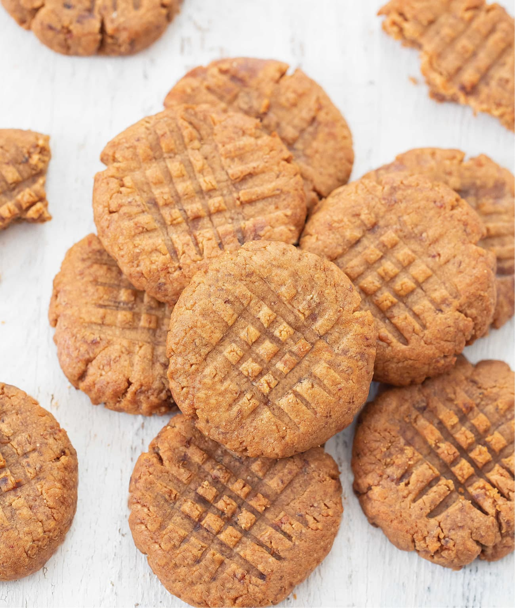

Home
2 Ingredient Peanut Butter cookies

DESCRIPTION
Just in case you didn't know how to make the absolutely easiest after school treat, I'm sharing this formula with you. These 2 ingredient peanut butter cookies are an absolute classic, and I'm sure that you will make them again and again!
If these weren't the first cookies you baked with your grandparents or parents, let's remedy that right now. If you have a jar of peanut butter and some leftover powdered sugar from making my Pumpkin Tiramisu, you can make these cookies in minutes!
INGEDIENTS
- 1 cup peanut butter
- ½ cup powdered sugar
STEPS
- Mix the ingredients.In a large bowl, stir together the peanut butter and powdered sugar until well-mixed and completely incorporated.
- Place dough in refrigerator for at least 30 minutes Place in refrdigerator to allow the dough to firm up.
- Preheat oven to 350-degrees F. While you wait, preheat the oven to 350-degrees F and line a baking sheet with parchment paper.
- Scoop out 1-tablespoon sized dough balls Roll the dough balls in your hands, and space them evenly on a baking sheet.
- Flatten the cookies Using a spatula or glass, press the cookies flat. Then, use a fork to make a criss-cross shape in each cookie.
- Bake for 9-11 minutes Bake until the cookies are dry on the surface and the edges are starting to turn golden brown.